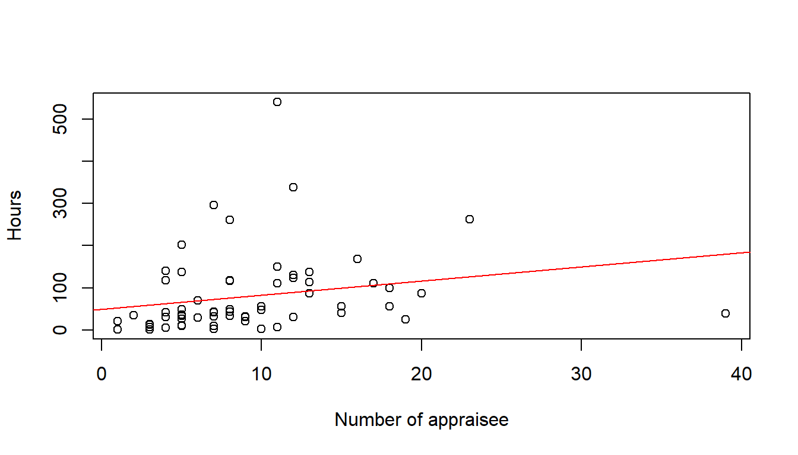
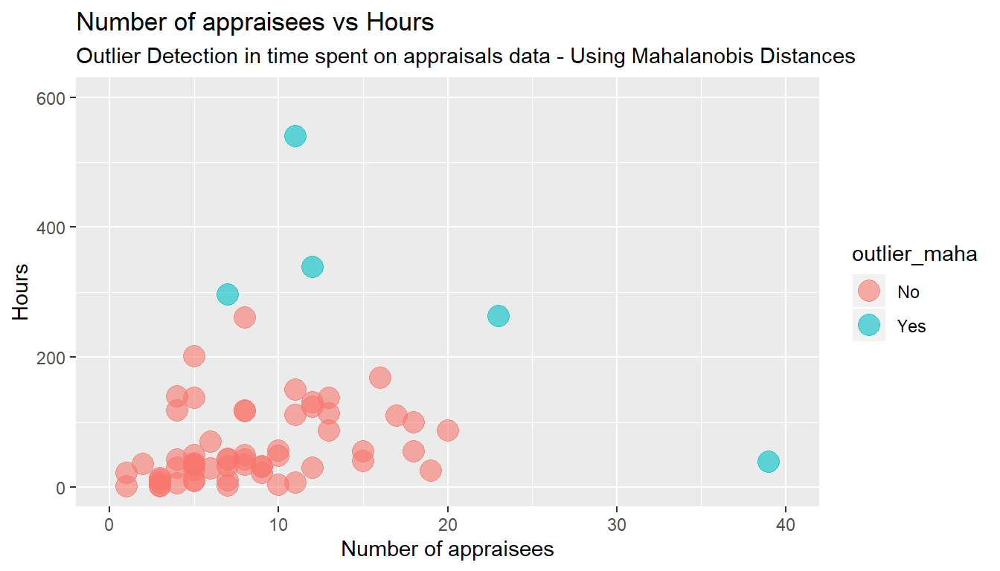
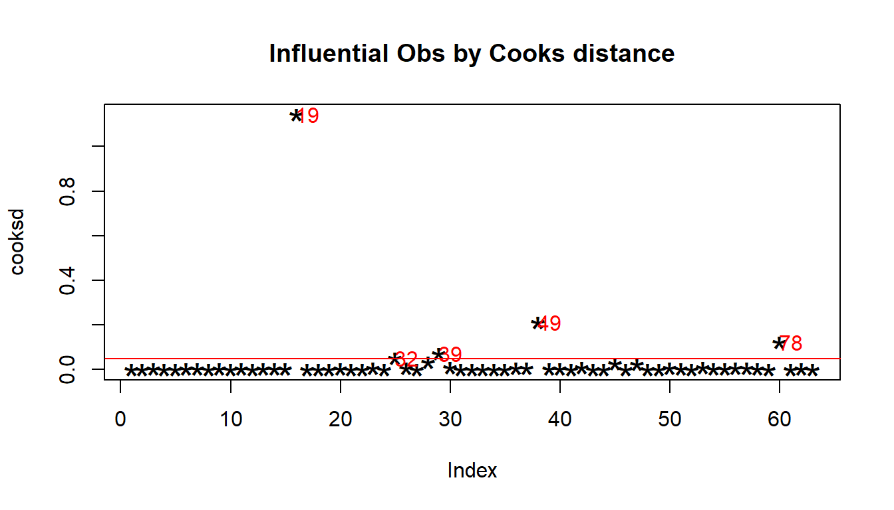
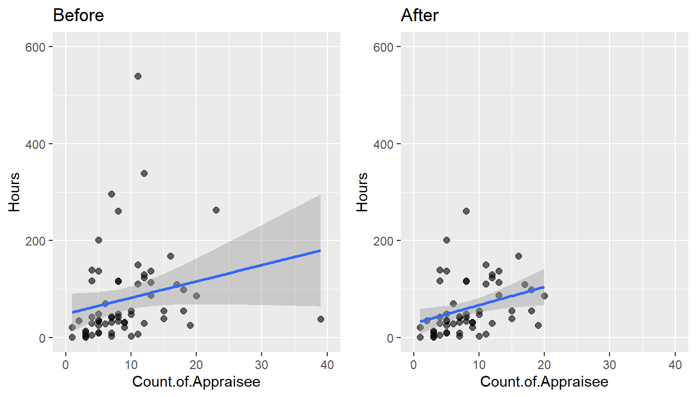

Chapter 14 Stop appraisals
How can HR give time back to the organisation? In a recent post Tom Haak from the HR Trend Institute suggested that a huge time saver was to stop the formal performance management process. Such ideas are constantly mentioned in management meetings. In fact, several companies are taking that route.
Tom Haak is mentioning an organisation in which they calculated that all the work around the performance management process for one employee costs manager and employee around 10 hours (preparation, two formal meetings per year, completing the online forms, meeting with HR to review the results etc.). By simplifying the process (no mandatory meetings, no forms, no review meetings, just one annual rating to be submitted per employee by the manager), HR was able to give back many hours to the organisation (to the relief of managers and employees).
So how would one go about, to introduce such change in an organisation. Here the Overhead value analysis (OVA) can come to the rescue. It is a technique used to find opportunities to reduce overhead costs (Paul Pietersma 2015).
The technique previews the following steps:
- The first step is to create a foundation including a definition of the required output, the required activities and an assessment of the end product.
- The second step is to make an orderly listing of activities and costs. This step includes estimating the costs of input/resources, the costs of activities and the allocation of the cost to products, generally with the help of activity-based costing (ABC).
- In step three, a customer evaluation of the service and output is required. Relevant aspects are necessity (i.e. critical, desired or nice-to-have), quality, quantity and cost. Customers are asked for both an assessment of the current output and an indication of the improvements that need to be made. Both interviews and questionnaires are used in the customer evaluation.
- In step 4, the OVA team must identify cost-saving opportunities based on the possible improvements identified. This forces the organisation to make a statement with regard to priorities for output and required activities.
- Step 5 is to prioritise opportunities with the aid of the four elements used earlier in the customer evaluation:
- Is the activity adding value?
- Is quality of output sufficient?
- Is quantity of output sufficient?
- Can it be done at reasonable cost?
- Finally, as a project in itself, the last step is to implement the set of changes discussed and decided upon in the previous five steps.
In the following we will analyse the cost in appraising employees (step 2 of the OVA technique). Let us have a look at an organisation which utilises an activity based costing framework. An organisation in which staff working time is allocated to the different projects and activities, among others time spent on staff apparaisals.
We will use only the tidyverse library.
First, let’s import some data on self declared time spent on appraisals,
plot(Hours ~ Count.of.Appraisee, # plot the variables y ~ x
xlab="Number of appraisee", # x−axis label
ylab="Hours", # y−axis label
data=Time.spent.on.appraisals) # data set
model <- lm(Hours ~ Count.of.Appraisee, data=Time.spent.on.appraisals)
abline(model, col = "red")
#The following produces the formula of the linear regression
paste('y =', round(coef(model)[[2]], digits = 3), '* x', '+', round(coef(model)[[1]], digits = 3)) [1] "y = 3.362 * x + 49.134"Is is now an interpolation or a linear regression?
Interpolation is a method of constructing new data points within the range of a discrete set of known data points. Regression analysis is a statistical process for estimating the relationships among variables.
y = 3.362 * x + 49.134" What does it mean?
From these numbers it would appear, that every manager spends on average 49 hours independently from the number of staff to appraise (for their own self-assessment and for the appraisal process in general, i.e. reading material, management meetings, refreshing how to appraise staff and re-training with the IT tools). In addition every manager spends on average 3 hours and 20 minutes to appraise each indivual subordinate, initial meeting with staff member and then writing up the appraisal itself.
From looking at the chart, it would appear that there are a couple of outliers. In statistics, an outlier is defined as an observation which stands far away from the most of other observations. Often an outlier is present due to the measurements error. Therefore, one of the most important tasks in data analysis is to identify and only if it is necessary to remove the outlier. Recording time to the closest 15 minutes requires a lot of attention from the manager.
Let us identify the outliers and remove them. A script from Klodian Dhana, Creator of DataScience+, comes in handy: https://datascienceplus.com/identify-describe-plot-and-removing-the-outliers-from-the-dataset/
# First let us identify the outliers and plot the initial plot with the names of the appraiser
# Calculate Mahalanobis Distance with height and weight distributions
m_dist <- mahalanobis(Time.spent.on.appraisals[,2:3], colMeans(Time.spent.on.appraisals[,2:3], na.rm = TRUE), cov(Time.spent.on.appraisals[,2:3], use="complete.obs"))
Time.spent.on.appraisals$m_dist <- round(m_dist, 2)
# A quick check by sorting the value will indicate the threshold you may want to use:
sort(Time.spent.on.appraisals$m_dist) [1] 0.10 0.15 0.15 0.16 0.16 0.18 0.18 0.18 0.22 0.23 0.23 0.27
[13] 0.29 0.31 0.34 0.36 0.41 0.43 0.43 0.43 0.44 0.50 0.50 0.54
[25] 0.54 0.55 0.57 0.62 0.64 0.65 0.68 0.70 0.74 0.76 0.82 0.84
[37] 0.85 0.90 0.93 1.01 1.03 1.09 1.11 1.15 1.16 1.17 1.35 1.53
[49] 1.54 1.73 1.87 1.92 2.35 2.36 2.70 3.52 3.77 3.87 5.74 7.40
[61] 7.49 23.79 26.16The Mahalanobis distance (MD) is the distance between two points in multivariate space. In a regular Euclidean space, variables (e.g. x, y, z) are represented by axes drawn at right angles to each other; The distance between any two points can be measured with a ruler. For uncorrelated variables, the Euclidean distance equals the MD. However, if two or more variables are correlated, the axes are no longer at right angles, and the measurements become impossible with a ruler. In addition, if you have more than three variables, you can’t plot them in regular 3D space at all. The MD solves this measurement problem, as it measures distances between points, even correlated points for multiple variables.
The Mahalanobis function returns the squared Mahalanobis distance of all rows in x and the vector mu = center with respect to Sigma = cov. This is (for vector x) defined as
D^2 = (x - μ)’ Σ^-1 (x - μ)
# We chose to set the threshold at 4, as this would result in five outliers. There is no "rule of thumb" on where to set the threshold and the decision is up to the analyst.
# Mahalanobis Outliers - Threshold set to 4
Time.spent.on.appraisals$outlier_maha <- "No"
Time.spent.on.appraisals$outlier_maha[Time.spent.on.appraisals$m_dist > 4] <- "Yes"
# Scatterplot with Mahalanobis' Outliers
ggplot(Time.spent.on.appraisals, aes(x = Count.of.Appraisee, y = Hours, color = outlier_maha)) +
geom_point(size = 5, alpha = 0.6, na.rm=TRUE) + # na.rm=TRUE removes missing values error message silently
xlim(0, 40) + ylim(0, 600) +
labs(title = "Number of appraisees vs Hours",
subtitle = "Outlier Detection in time spent on appraisals data - Using Mahalanobis Distances") +
ylab("Hours") + xlab("Number of appraisees")
model_without_mahaoutliers <- lm(Hours ~ Count.of.Appraisee, data=Time.spent.on.appraisals[which(Time.spent.on.appraisals$outlier_maha== "No"),])
#The following produces the formula of the new linear regression without the Mahalanobis outliers
paste('y =', round(coef(model_without_mahaoutliers)[[2]], digits = 3), '* x', '+', round(coef(model_without_mahaoutliers)[[1]], digits = 3)) [1] "y = 3.741 * x + 30.099"y = 3.741 * x + 30.099
Now it would appear, that every manager spends on average 26 hours independently from the number of staff to appraise and an additional 3 hours and 47 minutes to appraise each indivual subordinate.
Let us start all over again with another method for excluding outliers, using the Cook distance.
plot(Hours ~ Count.of.Appraisee, # plot the variables y ~ x
xlab="Number of appraisee", # x−axis label
ylab="Hours", # y−axis label
data=Time.spent.on.appraisals) # data set
model <- lm(Hours ~ Count.of.Appraisee, data=Time.spent.on.appraisals)
abline(model, col = "red")
cooksd <- cooks.distance(model)
# Plot the Cook's Distance using the traditional 4/n criterion
sample_size <- nrow(Time.spent.on.appraisals)
plot(cooksd, pch="*", cex=2, main="Influential Obs by Cooks distance") # plot cook's distance
abline(h = 4/sample_size, col="red") # add cutoff line
text(x=1:length(cooksd)+1, y=cooksd, labels=ifelse(cooksd>4/sample_size, names(cooksd),""), col="red") # add labels
# Removing Outliers
# influential row numbers
influential <- as.numeric(names(cooksd)[(cooksd > (4/sample_size))])
Time.spent.on.appraisals_screen <- Time.spent.on.appraisals[-influential, ]
plot3 <- ggplot(data = Time.spent.on.appraisals, aes(x = Count.of.Appraisee, y = Hours)) +
geom_point(size = 2, alpha = 0.6, na.rm=TRUE) +
xlim(0, 40) + ylim(0, 600) +
geom_smooth(method = lm, na.rm=TRUE) + # geom_smooth
ggtitle("Before")
plot4 <- ggplot(data = Time.spent.on.appraisals_screen, aes(x = Count.of.Appraisee, y = Hours)) +
geom_point(size = 2, alpha = 0.6, na.rm=TRUE) +
xlim(0, 40) + ylim(0, 600) +
geom_smooth(method = lm, na.rm=TRUE) +
ggtitle("After")
gridExtra::grid.arrange(plot3, plot4, ncol=2)
model_screen <- lm(Hours ~ Count.of.Appraisee, data=Time.spent.on.appraisals_screen)
#The following produces the formula of the new linear regression without the outliers
paste('y =', round(coef(model_screen)[[2]], digits = 3), '* x', '+', round(coef(model_screen)[[1]], digits = 3)) [1] "y = 3.741 * x + 30.099"y = 3.741 * x + 30.099
Now it would appear, that every manager spends on average 30 hours independently from the number of staff to appraise and an additional 3 hours and 45 minutes to appraise each indivual subordinate.
You can imagine that we could push the analysis even further, but we will stop here for the time being. Ready to resume when management is again interested in the matter.
References
Paul Pietersma, Gerben Van den Berg. 2015. Key Management Models. FT Publishing International. https://www.safaribooksonline.com/library/view/key-management-models/9781292016276/.